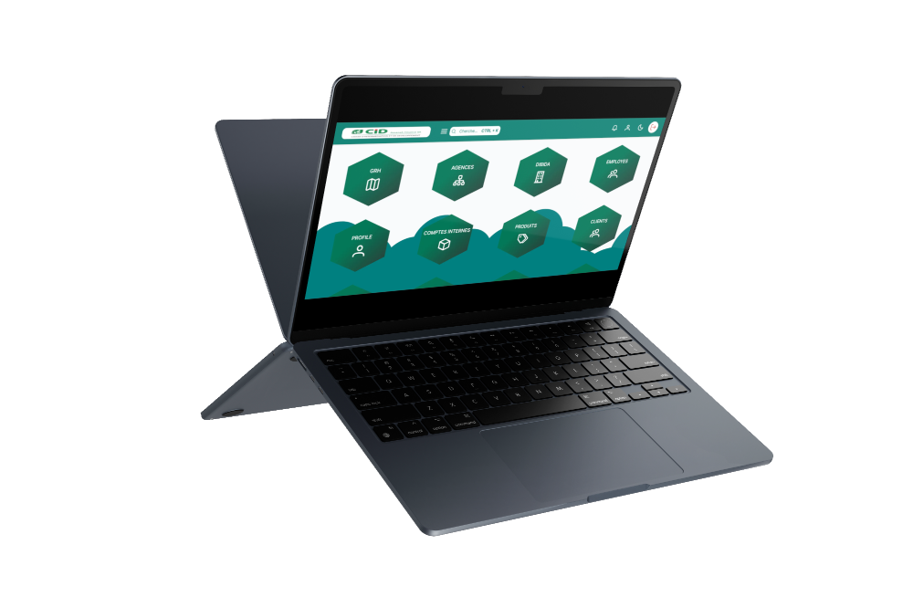

THL Core Banking#
Bienvenue sur la documentation de THL Core Banking.

📊 Aperçu Rapide#
THL Core Banking est une solution bancaire complète et moderne, conçue pour répondre aux besoins des institutions financières contemporaines. Notre plateforme intègre 16 modules spécialisés pour offrir une expérience bancaire exceptionnelle.
🎯 Modules Principaux : - Comptabilité : Gestion comptable intégrée avec grand livre ⭐ Guide utilisateur complet disponible - Agences : Administration centralisée des agences bancaires - Clients : Gestion complète de la clientèle - Comptes : Administration des comptes clients et internes - Financements : Gestion du portefeuille de financements - Transactions : Traitement de toutes les opérations bancaires - Caissier : Gestion des opérations de caisse et billetage
📈 Statistiques : - ✅ 7 modules complets avec documentation détaillée - 🔄 7 modules en cours de finalisation - 📚 80% de couverture des fonctionnalités principales - 🚀 Mises à jour régulières et nouvelles fonctionnalités
📘 Documentation Comptable : - ⭐ Guide Utilisateur Complet (A-Z) : Documentation exhaustive de toutes les fonctionnalités comptables - 📖 Module Comptable Technique : Architecture et détails techniques - 🎯 Fonctionnalités Disponibles : Liste complète des fonctionnalités
📚 Sommaire